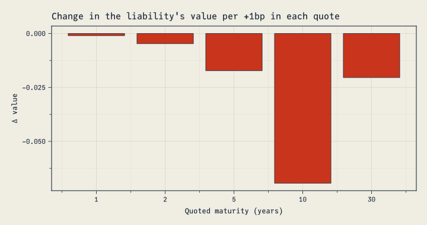
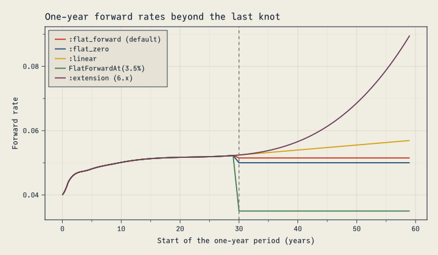
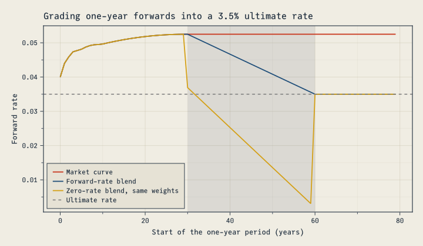
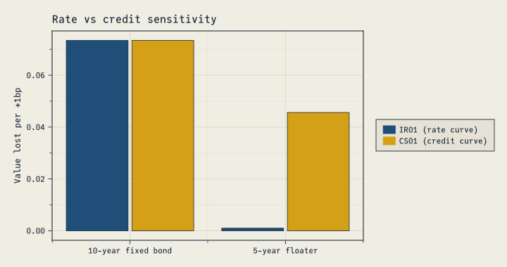
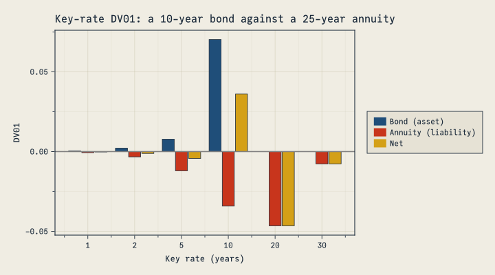
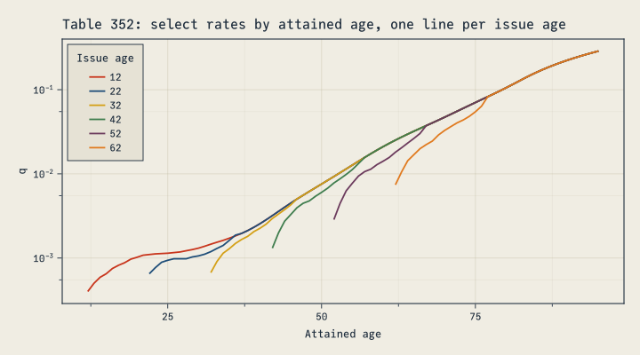
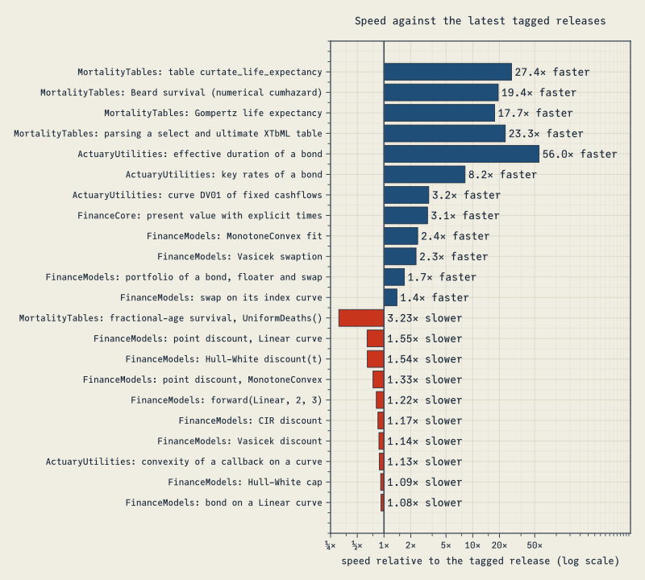

using FinanceModels, FinanceCore, ActuaryUtilities, MortalityTables, ForwardDiff
WarningDraft: these releases are not yet available
FinanceModels 7.0, ActuaryUtilities 6.0, MortalityTables 3.0 and EconomicScenarioGenerators 0.7.1 are not yet released, so installing the packages today gives the previous versions (only FinanceCore 3.0 is released). The code in this post ran on the release candidates, and details may change before release.
Four major JuliaActuary releases bring sensitivities through curve calibration, curve blending, more consistent risk measures, and corrections to discounting and mortality calculations. Some changes alter the numbers existing models produce: portfolio values, the sign of DV01, zero rates beyond a curve’s last knot, and the rates of eight SOA tables. Others simplify the APIs or improve performance. This post explains what changes, why, and how to migrate.
FinanceModels 7.0, ActuaryUtilities 6.0, MortalityTables 3.0 and FinanceCore 3.0 are major releases with breaking changes; FinanceCore 3.0 includes the fixes of FinanceCore 2.8. Migration guides and release notes are linked under Upgrading.
All the code below runs as part of this post.
New capabilities
Sensitivities through calibration (FinanceModels)
You can now measure how a valuation changes when the market quotes used to calibrate its curve change. Spline fits support ForwardDiff differentiation through those quotes. Here is a 20-year level liability valued on a curve fitted to five zero-coupon yields:
tenors = [1.0, 2.0, 5.0, 10.0, 30.0]
rates = [0.040, 0.042, 0.045, 0.047, 0.050]
cfs, times = fill(10.0, 20), 1.0:20.0
liability(r) = pv(fit(Spline.Linear(), ZCBYield.(Continuous.(r), tenors)), cfs, times)
liability(rates)126.65633549555342Its gradient with respect to the five quotes:
∂pv = ForwardDiff.gradient(liability, rates)5-element Vector{Float64}:
-9.607894391523232
-47.14967754400351
-172.05932550264362
-693.8427485681342
-204.15905202464222These first-order sensitivities come from the fitted pricing equations through the implicit function theorem. They require no finite-difference bump size and preserve the ordinary fit’s value.
NoteThe implicit function theorem, in actuarial terms
A bond’s yield to maturity is defined implicitly, as the rate at which present value equals price. To see how the yield moves with the price, you don’t rerun the root-finder: differentiating PV(y) = P at the answer gives dy/dP = 1 / PV′(y), the familiar duration relationship. A curve fit is the same idea with many quotes at once. After fitting, FinanceModels differentiates the repricing equations and solves for the quote sensitivities, avoiding a separate refit for each bumped quote. Their accuracy depends on the fit’s tolerance and conditioning, which FinanceModels checks.
A central finite difference agrees closely:
bump(i, h) = rates .+ h .* (eachindex(rates) .== i)
fd = [(liability(bump(i, 1e-6)) - liability(bump(i, -1e-6))) / 2e-6 for i in eachindex(rates)]
maximum(abs, fd .- ∂pv)7.723339763288095e-6Plotting code
fig = Figure(size = (720, 380))
ax = Axis(fig[1, 1];
title = "Change in the liability's value per +1bp in each quote",
xlabel = "Quoted maturity (years)", ylabel = "Δ value",
xticks = (eachindex(tenors), string.(Int.(tenors))))
barplot!(ax, eachindex(tenors), ∂pv .* 1e-4)
fig
The liability’s cashflows end at 20 years, yet the 30-year quote matters: the linear curve between the 10- and 30-year knots depends on both.
Calibration sensitivities support loss fits with each spline interpolation method, linear bootstraps, and FX forward curves with a spline foreign curve. The fit must pass repricing and conditioning checks, and its derivative must exist. Higher-order calibration derivatives and derivatives with respect to quote maturities or cashflow times are not supported. The Sensitivities Through Calibration guide explains the restrictions, including interpolation kinks.
implied_quote (FinanceModels)
implied_quote(curve, family, maturity) returns the rate or price a curve implies for an instrument of the requested maturity. It also supports derivatives with respect to the curve:
curve = ZeroRateCurve(rates, tenors)
implied_quote(curve, CMTYield, 7.0)0.04626336826742401The family can be a quote constructor such as CMTYield, OISYield, ZCBYield or ZCBPrice, or a closure such as (r, t) -> ParYield(r, t; frequency = 1).
Extrapolation policies (FinanceModels)
Curves built on DataInterpolations (Spline.Linear(), Quadratic(), Cubic(), PCHIP(), Akima(), BSpline(d)) take an extrapolation policy for the long end:
:flat_forward(the default) holds the last discrete forward constant;:flat_zeroholds the last zero rate;:linearextends the zero rate linearly;Yield.FlatForwardAt(rate)holds a forward you choose;:extensioncontinues the last interpolation piece, as 6.x did.
c = ZeroRateCurve(rates, tenors, Spline.Cubic(); extrapolation = Yield.FlatForwardAt(Continuous(0.035)))
forward(c, 40.0, 60.0)Continuous(0.03500000000000001)Here are the one-year forwards of the same cubic curve under each policy, by the start of each year. The curves agree through the 30-year knot; one-year forwards begin to differ when their end date passes it. Beyond it, 6.x’s :extension keeps climbing:
Plotting code
policies = [
":flat_forward (default)" => :flat_forward,
":flat_zero" => :flat_zero,
":linear" => :linear,
"FlatForwardAt(3.5%)" => Yield.FlatForwardAt(Continuous(0.035)),
":extension (6.x)" => :extension,
]
starts = 0.0:0.25:59.0
fig = Figure(size = (720, 420))
ax = Axis(fig[1, 1]; title = "One-year forward rates beyond the last knot",
xlabel = "Start of the one-year period (years)", ylabel = "Forward rate")
for (label, policy) in policies
ci = ZeroRateCurve(rates, tenors, Spline.Cubic(); extrapolation = policy)
lines!(ax, starts, [rate(forward(ci, s, s + 1)) for s in starts]; label)
end
vlines!(ax, [30.0]; color = :gray, linestyle = :dash)
axislegend(ax; position = :lt)
fig
One interface for knot curves (FinanceModels)
Knot curves now share an interface for inspecting and updating their rates and tenors. ZeroRateCurve returns the concrete curve it builds: a Yield.MonotoneConvex for the default interpolation, a Yield.Spline otherwise. Use knot_rates (the knot zero rates, as Continuous rates) and knot_tenors to inspect it, and reconstruct(curve; rates, tenors, spline, extrapolation) to build a modified copy.
This matters when you start from a curve someone else built, such as a vendor’s valuation-date curve, a scenario generator’s or another team’s, and need variations of it: stress tests, sensitivity runs, or a roll-forward to new rates. Rebuilding the curve by hand from its rates can drop settings the rates don’t show. A different interpolation method moves values between the knots, and a default tail moves every value beyond the last knot. reconstruct changes only what you pass and keeps everything else.
For example, here is a steepening stress on a curve delivered with cubic interpolation and its long end held at a 3.5% forward:
delivered = ZeroRateCurve(rates, tenors, Spline.Cubic(); extrapolation = Yield.FlatForwardAt(Continuous(0.035)))
steepener = Continuous.([0.0, 0.001, 0.0025, 0.004, 0.005]) # +0bp at 1 year, rising to +50bp at 30 years
stressed = reconstruct(delivered; rates = knot_rates(delivered) .+ steepener)ZeroRateCurve([0.04, 0.043000000000000003, 0.0475, 0.051000000000000004, 0.055], [1.0, 2.0, 5.0, 10.0, 30.0], FinanceModels.Spline.PolynomialSpline(3); extrapolation = Yield.FlatForwardAt(Continuous(0.035)))The stressed curve prints as the call that rebuilds it, so the interpolation and tail it kept are visible, and the printout can go straight into a report, a test or a bug report. Knot curves also compare by value, so stressed == delivered tells you whether a curve changed between runs. The stress lowers the liability’s value:
(delivered = pv(delivered, cfs, times), stressed = pv(stressed, cfs, times))(delivered = 126.2883461617498, stressed = 121.72597237984294)reconstruct also accepts dual numbers, so sensitivities to a curve’s own knot rates are a one-liner. These are the exposures to hedge when your inputs are the knots themselves. Here they are for the monotone convex curve from earlier:
ForwardDiff.gradient(z -> pv(reconstruct(curve; rates = z), cfs, times), rate.(knot_rates(curve)))5-element Vector{Float64}:
-7.419928800250587
-33.95067280823388
-67.64308450097408
-820.0414473970203
-193.95053909993328(On a cubic spline like delivered, the same sensitivities swing between positive and negative, because moving one knot reshapes the whole curve. That’s one reason local interpolants such as Spline.Linear() or the monotone convex default are easier to hedge against.)
Blending curves (FinanceModels)
Yield.Blend combines curves with weights that sum to 1. The space you choose says what is averaged:
Yield.DiscountFactors()averages discount factors,D(t) = Σ wᵢ Dᵢ(t). This is a mixture of scenarios: with constant weights, its present value is the weighted average of the curves’ present values.Yield.ZeroRates()averages zero rates. With constant weights it is the same curve asw * a + (1 - w) * b.Yield.ForwardRates(period)averages forward rates period by period, reading a weight that varies with tenor at the start of each period.
Yield.Blend(a, b, w, space) weights a by w and b by 1 - w, and Yield.Blend(curves, weights, space) takes any number of curves. A weight is a number or a function of tenor.
Grading a market curve into an ultimate rate is a forward-rate blend. Here the monotone convex curve from earlier applies to 30 years. Its annual forwards then move linearly to a 3.5% ultimate rate at 60 years, and the ultimate rate applies after that:
ultimate = Yield.Constant(Continuous(0.035))
grade(t) = clamp((60 - t) / 30, 0, 1) # the market curve's weight
graded = Yield.Blend(curve, ultimate, grade, Yield.ForwardRates(1.0))
[rate(forward(graded, s, s + 1)) for s in (30, 45, 60)]3-element Vector{Float64}:
0.05250000000000021
0.043749999999999845
0.03500000000000014The grading starts after the first example’s liability ends, at 20 years, so the liability’s value is unchanged:
(market = pv(curve, cfs, times), graded = pv(graded, cfs, times))(market = 126.39304481426217, graded = 126.39304481426217)Grading the zero rates with the same weights gives a different curve. A zero rate averages its curve’s forwards from time 0, so shifting weight between the curves as the tenor grows shifts that whole history at once. The forward rate absorbs the shift: a weight that varies with tenor adds w′(t) (Lₐ(t) − L_b(t)) to it, where L = −log D. Here that term pulls the forwards far below both curves:
zero_graded = Yield.Blend(curve, ultimate, grade, Yield.ZeroRates())
[rate(forward(zero_graded, s, s + 1)) for s in (30, 45, 59)]3-element Vector{Float64}:
0.03691666666666693
0.019416666666666416
0.0030833333333331048Plotting code
years = 0:79
fig = Figure(size = (720, 420))
ax = Axis(fig[1, 1]; title = "Grading one-year forwards into a 3.5% ultimate rate",
xlabel = "Start of the one-year period (years)", ylabel = "Forward rate")
vspan!(ax, [30.0], [60.0]; color = (CF_INK_SOFT, 0.12))
for (label, c) in ["Market curve" => curve, "Forward-rate blend" => graded, "Zero-rate blend, same weights" => zero_graded]
lines!(ax, years, [rate(forward(c, s, s + 1)) for s in years]; label)
end
hlines!(ax, [0.035]; color = :gray, linestyle = :dash, label = "Ultimate rate")
axislegend(ax; position = :lb)
fig
A discount-factor blend is a mixture. A 50/50 mixture of a 2% and a 6% scenario values cashflows at the average of the two present values. That is more than discounting at the average rate, 4%:
low, high = Yield.Constant(Continuous(0.02)), Yield.Constant(Continuous(0.06))
mixture = Yield.Blend(low, high, 0.5, Yield.DiscountFactors())
average = Yield.Blend(low, high, 0.5, Yield.ZeroRates())
(mixture = pv(mixture, cfs, times),
mean_of_pvs = (pv(low, cfs, times) + pv(high, cfs, times)) / 2,
average_rate = pv(average, cfs, times))(mixture = 138.10280622116062, mean_of_pvs = 138.1028062211606, average_rate = 134.93275900301012)The mixture’s zero rate starts near 4% and falls toward the low scenario’s 2%, because the high scenario’s discount factors become negligible at long tenors:
[rate(zero(mixture, t)) for t in (1, 10, 30, 100, 1000)]5-element Vector{Float64}:
0.03980001333191128
0.03801319281599927
0.0343288237740638
0.026749972526421355
0.020693147180559944The same mixture over simulated short-rate paths, Yield.Blend(collect(paths), fill(1 / n, n), Yield.DiscountFactors()), is their expected discount factor. It gives the expected present value of cashflows that don’t vary by scenario. Weights that don’t sum to 1 throw an ArgumentError, and discount-factor weights must lie in [0, 1]. The blending guide covers each space, including a mixture rebased to a later date.
Parallel risk without tenor grids (ActuaryUtilities)
ActuaryUtilities 6 measures parallel risk directly, with new forms that need no key-rate grid:
- a
DV01do-block for any valuation; - two-curve callbacks for
IR01andCS01; - two-curve convexity, returned as blocks keyed by role, such as
base.credit; sensitivities(valuation, curve), the value with its duration and DV01 from one derivative pass (SecondOrder()adds convexity and dollar convexity);- dollar convexity,
convexity(DollarConvexity(), curve, cfs, times): the second derivative of value, not divided by it, so it is defined at zero value and adds across positions.
NoteWhat is a valuation callback?
A valuation callback is a function you write that takes a curve (or a rate) and returns a value. ActuaryUtilities shifts the curve, calls your function with each shifted curve, and differentiates the result with ForwardDiff. Because the callback recomputes the whole valuation under each shift, it captures cashflows that depend on rates. Here a five-year floater pays the one-year forward rate plus 1%, so its coupons reset on whatever curve it receives. Treating today’s projected coupons as fixed cashflows misses the reset and gives a bond-like duration:
frn_value(c) = sum(1:5) do t
coupon = 100 * (1 / discount(c, t - 1, t) - 1 + 0.01) # resets on the shifted curve
(coupon + (t == 5 ? 100 : 0)) * discount(c, t)
end
frozen = [100 * (1 / discount(curve, t - 1, t) - 1 + 0.01) + (t == 5 ? 100 : 0) for t in 1:5]
(callback = duration(frn_value, curve), frozen = duration(curve, frozen, 1:5))(callback = 0.12239237945330604, frozen = 4.524908001390014)Only the fixed 1% margin has rate risk, so the floater’s duration is small. These are the effective and spread durations of the floater contract in One call shape for every sensitivity, which needs no callback: fixed cashflows and contracts go after the curve, and ActuaryUtilities values them itself.
The callback comes first, so it can be a named function, an anonymous function, a callable struct, or a do block, which Julia passes as the first argument: duration(DV01(), curve) do c ... end. It must accept ForwardDiff’s dual numbers, so avoid converting values to Float64 inside it. With two curves it takes both, as in (base, credit) -> …, and with a NamedTuple of curves it takes the named tuple.
Take a 10-year 4.5% bond held against a 25-year annuity liability:
bond, bond_times = [fill(4.5, 9); 104.5], 1.0:10.0
annuity, annuity_times = fill(-7.0, 25), 1.0:25.0
duration(DV01(), curve) do c
pv(c, bond, bond_times) + pv(c, annuity, annuity_times)
end-0.023933625584342588Rate and credit sensitivities differ only when a valuation uses the two curves differently. Compare the bond, whose fixed cashflows are discounted at rate + credit, with a five-year floater paying the one-year forward rate plus 150bp. The floater’s coupons reset on the rate curve, while every payment is discounted at rate + credit:
credit = Yield.Constant(Continuous(0.01))
margin = 0.015
bond_value(rate, credit) = pv(rate + credit, bond, bond_times)
floater_value(rate, credit) = sum(1:5) do t
coupon = 100 * (1 / discount(rate, t - 1, t) - 1 + margin) # resets on the rate curve
(coupon + (t == 5 ? 100 : 0)) * discount(rate + credit, t) # discounted at rate + credit
end
(bond = (ir01 = duration(bond_value, IR01(), curve, credit), cs01 = duration(bond_value, CS01(), curve, credit)),
floater = (ir01 = duration(floater_value, IR01(), curve, credit), cs01 = duration(floater_value, CS01(), curve, credit)))(bond = (ir01 = 0.0734321958187586, cs01 = 0.0734321958187586), floater = (ir01 = 0.0010003949893000992, cs01 = 0.04564592106665357))The floater’s IR01 is small: a rate rise raises its projected coupons by almost as much as it lowers their discounted value. Its CS01 is close to that of a five-year bond, because the credit curve discounts every payment. The two-curve convexity blocks show the same split:
(bond = convexity(bond_value, curve, credit), floater = convexity(floater_value, curve, credit))(bond = (base = (base = 75.16521133538198, credit = 75.16521133538198), credit = (base = 75.16521133538198, credit = 75.16521133538198)), floater = (base = (base = 0.403859931498768, credit = 8.68950257849735), credit = (base = 8.68950257849735, credit = 21.355741885569508)))Plotting code
instruments = ["10-year fixed bond", "5-year floater"]
ir01s = [duration(v, IR01(), curve, credit) for v in (bond_value, floater_value)]
cs01s = [duration(v, CS01(), curve, credit) for v in (bond_value, floater_value)]
fig = Figure(size = (720, 380))
ax = Axis(fig[1, 1]; title = "Rate vs credit sensitivity",
ylabel = "Value lost per +1bp", xticks = (1:2, instruments))
colors = [CF_BLUE, CF_AMBER]
barplot!(ax, [1, 2, 1, 2], [ir01s; cs01s]; dodge = [1, 1, 2, 2], color = colors[[1, 1, 2, 2]])
Legend(fig[1, 2], [PolyElement(polycolor = c) for c in colors], ["IR01 (rate curve)", "CS01 (credit curve)"])
fig
NoteEqual rate and credit sensitivities are the usual case
When a valuation depends only on the combined rate, as fixed cashflows discounted at base + credit do, its IR01, CS01 and combined-curve DV01 are equal, and so are its four convexity blocks. A one-basis-point move in either curve is a one-basis-point move in the rate the cashflows are discounted at. Fixed cashflows are always in this case, so their two-curve forms are removed: use duration(DV01(), base + credit, cfs, times) and convexity(base + credit, cfs, times).
Key-rate results still use a grid, now given as a KeyRates(tenors) marker before the curve argument. These sensitivities differentiate prescribed changes to the curve’s continuous zero rates; calibration sensitivities instead change market quotes and refit the curve. Dollar measures retain the position’s sign:
grid = [1.0, 2.0, 5.0, 10.0, 20.0, 30.0]
asset_kr = duration(DV01(), KeyRates(grid), curve, bond, bond_times)
liability_kr = duration(DV01(), KeyRates(grid), curve, annuity, annuity_times)6-element Vector{Float64}:
-0.0006725526074066262
-0.003298407685321483
-0.012033880313419369
-0.03419136433575766
-0.04656535699752384
-0.0077159551285951936Plotting code
fig = Figure(size = (720, 400))
ax = Axis(fig[1, 1]; title = "Key-rate DV01: a 10-year bond against a 25-year annuity",
xlabel = "Key rate (years)", ylabel = "DV01",
xticks = (eachindex(grid), string.(Int.(grid))))
n = length(grid)
xs = repeat(eachindex(grid), 3)
group = repeat(1:3; inner = n)
colors = [CF_BLUE, CF_RED, CF_AMBER]
barplot!(ax, xs, [asset_kr; liability_kr; asset_kr .+ liability_kr]; dodge = group, color = colors[group])
elements = [PolyElement(polycolor = c) for c in colors]
Legend(fig[1, 2], elements, ["Bond (asset)", "Annuity (liability)", "Net"])
hlines!(ax, [0.0]; color = :gray)
fig
Valuation callbacks can be callable structs, and the parallel measures accept cashflow amounts as arrays, tuples or finite generators.
One call shape for every sensitivity (ActuaryUtilities)
ActuaryUtilities 6 takes arguments in one order: the valuation callback (if any), the order marker of sensitivities, a measure marker such as DV01() or KeyRates(tenors), the curve or curves, then the cashflows or the contract. A contract’s index curve is the keyword index, which defaults to the discount curve:
| Measure | Fixed cashflows | Valuation callback | Contract or portfolio |
|---|---|---|---|
| duration | duration(curve, cfs, times) |
duration(valuation, curve) |
duration(discount, contract; index) |
| DV01 | duration(DV01(), curve, cfs, times) |
duration(valuation, DV01(), curve) |
duration(DV01(), discount, contract; index) |
| convexity | convexity(curve, cfs, times) |
convexity(valuation, curve) |
convexity(discount, contract; index) |
| dollar convexity | convexity(DollarConvexity(), curve, cfs, times) |
convexity(valuation, DollarConvexity(), curve) |
convexity(DollarConvexity(), discount, contract; index) |
| key rates | duration(KeyRates(t), curve, cfs, times) |
duration(valuation, KeyRates(t), curve) |
duration(KeyRates(t), discount, contract; index) |
| all at once | sensitivities([SecondOrder(),] curve, cfs, times) |
sensitivities(valuation, [SecondOrder(),] curve) |
sensitivities([SecondOrder(),] discount, contract; index) |
sensitivities returns the value, duration and DV01 from one derivative pass, and SecondOrder() adds convexity and dollar convexity. Dollar convexity is the unscaled second derivative of value: a shift Δs contributes ½ × dollar_convexity × Δs². value is a number. Without KeyRates the derivative fields are numbers; with it, duration and DV01 are per-tenor vectors and convexity and dollar convexity are matrices. With several curves, each field is keyed by curve role, the convexities in blocks such as base.credit. SecondOrder() needs second derivatives: a Hull–White swaption, whose critical rate FinanceModels differentiates to first order only, throws, as do calibration sensitivities, which are first order. For a floater, the discount role is spread risk, the index role is coupon reset, and effective duration is their sum:
frn = Bond.Floating(0.01, Periodic(1), 5.0, "OIS")
risk = sensitivities(curve, frn)
(risk.duration, effective = risk.duration.discount + risk.duration.index)(duration = (discount = 4.524908001390014, index = -4.4025156219367085), effective = 0.12239237945330572)The upgrade guide maps every 5.x call and result field to its replacement.
One mortality interface for tables and laws (MortalityTables)
cumhazardis defined for every parametric law: in closed form where MortalityTables implements one (Makeham, Gompertz, Weibull, Kannisto and others), and by numerical integration otherwise, as for Beard;survivalfollows from it.- Parametric models accept a
DeathDistributioninsurvival,decrementandcomplete_life_expectancyfor compatibility with table-based calls. They ignore that argument: the law already specifies mortality between integer ages. UltimateMortalityaccepts anyAbstractVector(ranges, views, vectors withmissing) and wraps it without copying.- Loading a table from CSV is a package extension, activated by
using CSV.
m = MortalityTables.Beard()
cumhazard(m, 40, 50), survival(m, 40, 50)(4.127968753618562, 0.01611558031314834)Age-basis conversions (MortalityTables)
age_nearest_to_age_last and age_last_to_age_nearest convert ultimate rates between age-nearest-birthday (ANB) and age-last-birthday (ALB) bases, assuming deaths are uniform over each year of age. The formula comes from the 1981 Transactions of the Society of Actuaries paper that published the 1980 CSO and CET tables on an age-last-birthday basis. The result keeps the input’s ages and number type, and the last rate must be one. Converting the 1980 CSO Male ANB table reproduces the published ALB table to its five-decimal rounding:
anb = MortalityTables.table(42).ultimate # 1980 CSO Male, ANB
alb = MortalityTables.table(41).ultimate # 1980 CSO Male, ALB
maximum(abs, age_nearest_to_age_last(anb) .- alb)4.9981493152465636e-6Thanks to @aminemanai2003 for this contribution (#154).
IRR derivatives of every order (FinanceCore 2.8)
An IRR is defined implicitly: it is the rate y at which the cashflows’ present value is zero, Σ aₖ (1 + y)^(-tₖ) = 0. As for a curve fit (see the implicit-function-theorem note under Sensitivities through calibration), its derivatives come from that equation at the root, not from the root-finder’s steps: ∂y/∂aₖ = -(∂PV/∂aₖ) / (∂PV/∂y), and similarly for the times and for higher orders. So irr supports gradients, Hessians and higher-order derivatives with respect to both amounts and times, whichever stage of the solver finds the root; before 2.8, a root found by the fallback stage silently had zero derivatives. Differentiating at a repeated root throws, because the sensitivity is undefined there.
For an outlay of 100 repaid with 110 a year later, the IRR is 10%: y = -a₂/a₁ - 1. Paying 1 less up front raises it by 1.1 points, and receiving 1 more at the end raises it by 1 point:
ForwardDiff.gradient(a -> rate(irr(a, [0.0, 1.0])), [-100.0, 110.0])2-element Vector{Float64}:
0.010999999999999998
0.009999999999999995The Hessian shows how those sensitivities change; the IRR is linear in the repayment, so that entry is zero up to rounding. Delaying the repayment lowers the IRR by about 10.5 points per year of delay, -1.1 ln(1.1):
(hessian = ForwardDiff.hessian(a -> rate(irr(a, [0.0, 1.0])), [-100.0, 110.0]),
delay = ForwardDiff.derivative(t -> rate(irr([-100.0, 110.0], [0.0, t])), 1.0))(hessian = [0.00021999999999999998 9.999999999999995e-5; 9.999999999999994e-5 -4.0657581468206416e-20], delay = -0.1048411977847573)Changes affecting existing models
These changes can alter valuations, risk measures or accepted inputs. Check the assumptions and conventions your existing models use when upgrading.
FinanceModels
- Portfolios and composites are worth the sum of their parts. 6.x passed each contract’s position in a collection as a valuation time: a 3-year zero-coupon bond at a continuous 3% was worth 0.9139 alone but 0.9418 inside
[bond], and[a, b]and[b, a]differed.present_value(model, contract)is now the one valuation, and a collection or aCompositeis worth the sum of its contracts’ values. Options, caps, floors and swaptions, which have closed forms but no cashflow projection, now combine too; they threw. These laws hold for contracts that carry their own payment times and whose values share a reporting currency, and sums taken in another order agree to rounding:
bs_model = Equity.BlackScholesMerton(0.01, 0.02, 0.15)
call_1y = Option.EuroCall(CommonEquity(), 1.0, 1.0)
put_1y = Option.EuroPut(CommonEquity(), 1.0, 1.0)
(composite = pv(bs_model, Composite(call_1y, put_1y)),
portfolio = pv(bs_model, [put_1y, call_1y]),
sum = pv(bs_model, call_1y) + pv(bs_model, put_1y))(composite = 0.11805304448046065, portfolio = 0.11805304448046065, sum = 0.11805304448046065)- Valuation contexts. A contract that reads other models by key, such as a floater’s index curve, is valued under
Models(model; index = curve)orModels(model, store), which replaceProjection(contract; index);Models(curve)uses one curve for both. A custom closed form is defined on the contract,present_value(ctx, c::MyContract), readingdiscount(ctx, t),ctx[key]andvaluation_model(ctx). Usingvaluation_model(ctx)keeps the model’s closed-form kernel underModels; keyed observables come from the store. Wrappers that act on the cashflow stream (Forward,FX.Converted, transducers) need a cashflow projection.
NoteWhich model does each part of a valuation use?
A fixed-rate bond needs a curve to discount its payments. A floater also needs an index curve to set its coupons. A valuation context supplies both:
discount_curve = Yield.Constant(Continuous(0.03))
index_curve = Yield.Constant(Continuous(0.04))
# Unit principal, annual coupons, 1% margin over the SOFR index
floater = Bond.Floating(Periodic(0.01, 1), Periodic(1), 5.0, :SOFR)
ctx = Models(discount_curve; index = index_curve)
(value = pv(ctx, floater), cashflows = collect(Projection(floater, ctx)))(value = 1.0931047541091208, cashflows = Cashflow{Float64, Float64}[Cashflow{Float64, Float64}(0.050810774192388226, 1.0), Cashflow{Float64, Float64}(0.050810774192388226, 2.0), Cashflow{Float64, Float64}(0.05081077419238822, 3.0), Cashflow{Float64, Float64}(0.05081077419238823, 4.0), Cashflow{Float64, Float64}(1.0508107741923882, 5.0)])The floater projects its coupons from index_curve, and pv discounts the payments on discount_curve. Projection shows the payments before discounting.
Contracts get their inputs through three operations:
| Operation | What it supplies under Models(model, store) |
|---|---|
discount(ctx, t) or discount(ctx, from, to) |
Discount factors from model |
ctx[key] |
The model stored under that key |
valuation_model(ctx) |
model itself, for a model-specific pricing formula |
Models(curve) uses one curve for discounting and every index lookup. Models(model; index = curve) returns curve for every key. Use an explicit store when different keys need different models:
term_curve = Yield.Constant(Continuous(0.045))
keyed = Models(discount_curve, (; SOFR = index_curve, TERM_SOFR = term_curve))
term_floater = Bond.Floating(Periodic(0.01, 1), Periodic(1), 5.0, :TERM_SOFR)
pv(keyed, [floater, term_floater])2.2100712566101404Each floater reads its own index, and both use the same discount curve. With an explicit store, a missing or misspelled key throws instead of silently using another curve.
The first model can also supply a closed-form price. An equity option uses the Black–Scholes model carried by its context:
bsm = Equity.BlackScholesMerton(0.03, 0.01, 0.20)
option = Option.EuroCall(CommonEquity(), 1.0, 1.0)
(plain = pv(bsm, option), bundled = pv(Models(bsm; index = index_curve), option))(plain = 0.08827321225352117, bundled = 0.08827321225352117)The values agree because the option uses the Black–Scholes model and reads nothing from the store. A contract that reads ctx[key] changes value when the stored model changes.
For a custom closed form, define FinanceCore.present_value(ctx, c::MyContract) with the operations above. If its formula depends on the pricing model’s type, pass valuation_model(ctx) to a method of FinanceModels.closed_form(model, contract).
Portfolios and Composites add their members’ values, so contracts valued only by closed forms can be members, if their values share a reporting currency. Forward, FX.Converted and transducers act on cashflow streams, so the contracts inside them must support projection; a valuation context does not supply one.
- One reporting currency per FX context. An
FX.Forwardscontext, alone or as the model ofModels, reports in its quote currency, andFX.Forwardis one quote-currency cashflow. Contracts that carry a currency are checked against it: anFX.Convertedmust convert into it, and a base-currencyFX.BasisSwapLegthrows unless the context reports in its base currency or is a plain yield curve; 6.x added its base-currency value to quote-currency values. Value the leg on a base-currency curve or convert it withFX.Converted. InsideFX.Converted, a leg must pay in the pair’s base currency, and anFX.Forward, which prices on the context’s own FX model, is not supported. The reporting currency is not a collateral choice: converting a present value at spot does not change the collateral assumptions the curves encode. - No valuation-time argument.
present_value(model, contract, t)is removed: the third argument meant payment times for numbers, nothing for aCashflow, and a valuation time for contracts.pv(model, contract)now also accumulates cashflows before time 0, which 6.x’s default valuation time of 0 dropped. On a deterministic curve, value the cashflows at or aftertas oftby discounting each one over[t, T]. The boundary is explicit in your code (inclusive here, as in 6.x):
asof(model, contract, t) = sum(cf.amount * discount(model, t, cf.time)
for cf in collect(Projection(contract, model)) if cf.time >= t; init = zero(discount(model, t, t)))
asof(Yield.Constant(Continuous(0.04)), Bond.Fixed(0.05, Periodic(1), 5), 2.0)1.0754617478299633Don’t accumulate a time-0 value instead. accumulation(model, t) * pv(model, contract) also counts the cashflows before t. If the time-0 present value includes only cashflows at or after t, the product agrees in exact arithmetic, but where the accumulation overflows and the time-0 value underflows it is Inf * 0 = NaN.
Transducers over contracts apply in the order written. Inside a projection,
bond |> double |> add1projected as [2.1, 4.1] instead of [1.1, 3.1], so its present value was wrong whilecollectwas right. Stateful and early-terminating transducers (Take,Scan) now also work inside a projection, a portfolio or aComposite; they threw.Rate results carry their convention.
knot_rates,Yield.instantaneous_forwardandshort_ratereturnContinuousrates. They were bare continuous numbers, which FinanceCore reads as annual effective, so passing one on, as inYield.Constant(instantaneous_forward(c, 5)), silently used the wrong rate. Userate(x)for the number, for example to seed a ForwardDiff gradient. Coupons, margins and interest-rate strikes also accept aPeriodicrate of the contract’s frequency, and other rate inputs accept aRatein any convention; numbers keep their meaning.Bootstrapping requires linear interpolation. With a smoother interpolant, adding a knot reshapes earlier segments, so bootstrapped coupon quotes silently stopped repricing (residuals up to 0.40% of par).
Fit.Bootstrap()now accepts onlySpline.Linear()and reprices every quote on the returned curve. Fit smooth curves to all quotes at once withFit.Loss:
fit(Spline.Cubic(), CMTYield.(rates, tenors), Fit.Bootstrap())ArgumentError: Fit.Bootstrap does not support FinanceModels.Spline.PolynomialSpline(3): adding a knot would change earlier curve segments and reprice earlier quotes. Use Spline.Linear(), or fit this strategy across all quotes with Fit.Loss(x -> x^2). Stacktrace: [1] fit(mod0::FinanceModels.Spline.PolynomialSpline, quotes::Vector{Quote{Float64, FinanceModels.Bond.Fixed{Periodic, Float64, Float64}}}, method::FinanceModels.Fit.Bootstrap; extrapolation::Symbol) @ FinanceModels ~/.julia/dev/pr-FinanceModels-v7-master/src/fit.jl:519 [2] fit(mod0::FinanceModels.Spline.PolynomialSpline, quotes::Vector{Quote{Float64, FinanceModels.Bond.Fixed{Periodic, Float64, Float64}}}, method::FinanceModels.Fit.Bootstrap) @ FinanceModels ~/.julia/dev/pr-FinanceModels-v7-master/src/fit.jl:515 [3] top-level scope @ ~/prog/JuliaActuary.org/posts/2026-fall-releases/index.qmd:556
- An explicit long-end assumption. Continuing the last interpolation polynomial past the last knot let that polynomial drive the long-end forwards, as in the figure above. The
:flat_forwarddefault changes zero rates and present values beyond the last knot of DataInterpolations curves;Spline.MonotoneConvex(), theZeroRateCurvedefault, is unchanged. For a linear bootstrap, the 30-year zero rate under the new default and under 6.x’s:extension:
quotes = ZCBYield.([0.02, 0.025, 0.031, 0.036], [1, 2, 5, 10])
zero(fit(Spline.Linear(), quotes, Fit.Bootstrap()), 30.0),
zero(fit(Spline.Linear(), quotes, Fit.Bootstrap(); extrapolation = :extension), 30.0)(Continuous(0.03859243637227028), Continuous(0.054718899047165113))- Flat before the first knot. DataInterpolations curves hold the first knot’s zero rate between time 0 and the first knot, so their zero rates before it change; MonotoneConvex curves don’t. Bootstrapped values are unchanged, but the extra
t = 0knot is gone, so a curve has exactly one knot rate per quote. - Curve arithmetic is factor arithmetic.
curve1 + curve2andcurve1 - curve2multiply and divide discount factors. Those are the only supportedCompositeYieldoperations. For a pointwise change to one curve’s zero rates, use aTenorShift, writtencurve + ((z, t) -> ...). This one floors the zero rate at 0:
negative = ZeroRateCurve([-0.01, 0.0, 0.01], [1.0, 2.0, 5.0])
floored = negative + ((z, t) -> max(z, Continuous(0.0)))
zero(negative, 1.0), zero(floored, 1.0)(Continuous(-0.01), Continuous(0.0))- Explicit quote conventions.
OISYieldbuilds annual-pay swaps beyond one year; it previously used quarterly payments.ParSwapYieldandInterestRateSwaprequire an explicitfrequency.ParYieldthrows when an explicitfrequencyconflicts with aPeriodicrate’s own compounding; the keyword used to be ignored. Everyfrequencytakes an integer or aPeriodic. - Failed fits throw. An optimizer fit that doesn’t converge throws a
FitConvergenceError; previously it returned the unfitted starting model. Optimizer-backed fits now acceptsolve_kwargs, passed to the solver, such as(; maxiters = 10_000, g_tol = 1e-12). Here one iteration is too few:
fit(Yield.NelsonSiegel(), CMTYield.(rates, tenors); solve_kwargs = (; maxiters = 1))FitConvergenceError: model fitting did not converge (optimizer return code Failure) Stacktrace: [1] __minimize(::Val{1}, loss::FinanceModels.var"#loss#77"{FinanceModels.Fit.Loss{FinanceModels.var"#__default_loss##0#__default_loss##1"}, FinanceModels.var"#build#76"{AccessibleModels.AccessibleModel{Nothing, FinanceModels.Yield.NelsonSiegel{Float64}, Tuple{Accessors.PropertyLens{:τ₁}, Accessors.PropertyLens{:β₀}, Accessors.PropertyLens{:β₁}, Accessors.PropertyLens{:β₂}}, NTuple{4, Distributions.Uniform{Float64}}, Distributions.ProductDistribution{1, 0, NTuple{4, Distributions.Uniform{Float64}}, Distributions.Continuous, Float64}}}}, x0::Vector{Float64}, quotes::Vector{Quote{Float64, FinanceModels.Bond.Fixed{Periodic, Float64, Float64}}}, optimizer::Optim.LBFGS{Nothing, LineSearches.InitialStatic{Float64}, LineSearches.HagerZhang{Float64, Base.RefValue{Bool}}, Returns{Nothing}}, solve_kwargs::@NamedTuple{maxiters::Int64}; lb::Vector{Float64}, ub::Vector{Float64}, who::String, hint::String) @ FinanceModels ~/.julia/dev/pr-FinanceModels-v7-master/src/fit.jl:240 [2] __minimize(loss::Function, x0::Vector{Float64}, quotes::Vector{Quote{Float64, FinanceModels.Bond.Fixed{Periodic, Float64, Float64}}}, optimizer::Optim.LBFGS{Nothing, LineSearches.InitialStatic{Float64}, LineSearches.HagerZhang{Float64, Base.RefValue{Bool}}, Returns{Nothing}}, solve_kwargs::@NamedTuple{maxiters::Int64}; lb::Vector{Float64}, ub::Vector{Float64}, who::String, hint::String) @ FinanceModels ~/.julia/dev/pr-FinanceModels-v7-master/src/fit.jl:227 [3] fit(mod0::FinanceModels.Yield.NelsonSiegel{Float64}, quotes::Vector{Quote{Float64, FinanceModels.Bond.Fixed{Periodic, Float64, Float64}}}, method::FinanceModels.Fit.Loss{FinanceModels.var"#__default_loss##0#__default_loss##1"}; variables::Tuple{Pair{Accessors.PropertyLens{:τ₁}, IntervalSets.ClosedInterval{Float64}}, Pair{Accessors.PropertyLens{:β₀}, IntervalSets.ClosedInterval{Float64}}, Pair{Accessors.PropertyLens{:β₁}, IntervalSets.ClosedInterval{Float64}}, Pair{Accessors.PropertyLens{:β₂}, IntervalSets.ClosedInterval{Float64}}}, optimizer::Optim.LBFGS{Nothing, LineSearches.InitialStatic{Float64}, LineSearches.HagerZhang{Float64, Base.RefValue{Bool}}, Returns{Nothing}}, solve_kwargs::@NamedTuple{maxiters::Int64}) @ FinanceModels ~/.julia/dev/pr-FinanceModels-v7-master/src/fit.jl:422 [4] fit @ ~/.julia/dev/pr-FinanceModels-v7-master/src/fit.jl:394 [inlined] [5] top-level scope @ ~/prog/JuliaActuary.org/posts/2026-fall-releases/index.qmd:581
Derivatives at kinks are defined or refused. Where
MonotoneConvex,PCHIPorAkimaswitch formula, ForwardDiff used to return a derivative matching neither an up nor a down bump. Flat PCHIP gaveNaN, and flat MonotoneConvex could be off by a factor of two. At a kink, MonotoneConvex now uses the average of the up- and down-bump derivatives as a convention; on a flat stretch, these partials need not sum to the parallel-shift derivative. PCHIP and Akima throw, as does differentiation through a fit whose resulting curve lies on a kink.Correct swaption Greeks. Jamshidian’s critical rate was found by a bisection that dropped its derivatives, so ForwardDiff Greeks of Vasicek and Hull–White swaptions were wrong. On a 1×5 payer swaption, Vasicek’s
∂/∂ahad the wrong sign and vega was 9% too high. Now automatic differentiation matches a finite difference:
swaption = Option.Swaption(1.0, 6.0, 0.035, 1)
price(a) = pv(ShortRate.Vasicek(a, 0.04, 0.01, Continuous(0.03)), swaption)
ForwardDiff.derivative(price, 0.1), (price(0.1 + 1e-6) - price(0.1 - 1e-6)) / 2e-6(0.008339500292175683, 0.008339500321211113)- Short-rate models near zero mean reversion. Vasicek’s
-log Pwas off by up to 4.5e-7 at smallaτ, and Hull–White’s derivatives with respect toavanished neara = 0. Near zero mean reversion, includinga = 0, both now match high-precision references to a few units of rounding over the tested parameters, and Hull–White’s derivatives with respect toano longer vanish. - Vasicek under negative mean reversion. With
a < 0, terms of Vasicek’s-log Pgrow likee^{|a|τ}and nearly cancel when the short rate is near its long-run level. 6.x computed them separately, so it lost the price. A constant 3% short rate (σ = 0,r = b) priced its 500-year bond at 0 instead ofe^{-15}witha = −0.1. Witha = −1, its 50-year price was 4.5 times too high, and prices wereNaNfrom about 355 years. The terms are now grouped, so they keep their accuracy relative to their size, and a term with a zero weight stays zero whene^{|a|τ}overflows. That rate now prices exactly at every horizon (each ratio toe^{-0.03τ}is 1):
constant_3pct = ShortRate.Vasicek(-1.0, 0.03, 0.0, Continuous(0.03))
[discount(constant_3pct, τ) / exp(-0.03τ) for τ in (50.0, 500.0, 1000.0)]3-element Vector{Float64}:
1.0
1.0
1.0- Stable discounting between distant dates. Interval discounts no longer divide two discount factors that have underflowed to zero. This interval 20,000 years out was
NaN(0/0) and is now approximatelyexp(-0.05):
discount(Yield.NelsonSiegel(1.0, 0.05, -0.02, 0.01), 20000, 20001)0.9512294245007573Time derivatives at t = 0 are also corrected where several curves gave NaN.
Stable CIR prices. The textbook formula raises a number within σ² of 1 to the power 2ab/σ², so a 10-year discount factor was 5.6e57 at σ = 1e-10, and a 10,000-year factor at σ = 0.01 was
NaN. Prices now come from one stable formula for −log P, which agrees with a high-precision reference to about 1e-13, relative.Forward-starting contracts read the index on their own clock.
Forward(s, floater)fixed the floater’s coupons on the index from time 0: a one-year floater starting at time 2 paid 1.0202 instead of 1.0305 on an upward curve. Wrapper contracts also nest in any order now, such as aForwardof aForwardor of aComposite; those threw aMethodError.Simulated paths end at their horizon. Evaluating a
RatePathbeyond the horizon it was simulated to now throws. It used to extend the last step, so a one-year simulation priced a payment at year 10. A horizon a whole number of steps away, up to roundoff, no longer gets an extra step:horizon = 0.07, timestep = 0.01took 8 steps and now takes 7, which changes those paths, and such a path ends at the horizon itself.Short-rate limits.
zero(curve, 0)is the short rate where it wasNaN(Vasicek, CIR, Hull–White, Smith–Wilson,ForwardStarting), andYield.instantaneous_forwardworks for every curve; at a knot it is the right-hand derivative of −log D, the forward of the piece that starts there. Hull–White conditional prices no longer turnNaNin the far tail, and Nelson–Siegel’s zero rate no longer jumps neart = 0. ### ActuaryUtilitiesDollar risk keeps its sign. Dollar sensitivities add across positions and reverse sign when a position is reversed. Ordinary liability payments entered as negative cashflows contribute negative DV01, and the new dollar convexity,
convexity(DollarConvexity(), …), behaves the same way:
duration(DV01(), curve, bond, bond_times), duration(DV01(), curve, annuity, annuity_times)(0.08054389148368157, -0.10447751706802416)The convention is DV01 = −∂V/∂s × 10⁻⁴, where s is the applicable rate shift. Aggregate as asset_dv01 + liability_dv01, and remove sign corrections added for the old absolute values. A mixed position’s DV01 need not share the sign of its present value, and a position worth zero can still have dollar risk.
- Convexity uses continuous-zero shocks, for every yield model. It now equals the sum of the full key-rate convexity matrix. For
[5, 5, 105]at times[1, 2, 3]underYield.Constant(Periodic(0.04, 1)), convexity changes from 11.26 in 5.x to:
convexity(Yield.Constant(Periodic(0.04, 1)), [5.0, 5.0, 105.0], [1.0, 2.0, 3.0])8.40087191197841- Fixed cashflows on two curves take the combined curve. The fixed-cashflow IR01, CS01 and two-curve convexity forms are removed; use
duration(DV01(), base + credit, cfs, times)andconvexity(base + credit, cfs, times). Mixed input types used to measure different one-basis-point moves: a curve with a scalar spread gave CS01 ≈ IR01 / (1 + spread). The IR01 and CS01 callback forms remain for valuations that use the curves differently. - Grids are only needed for key-rate results. Parallel measures no longer take a
tenorsargument. The grid never changed their values, and its position let swapped arguments return wrong numbers silently. The old call shapes throw aMethodError, and the upgrade guide maps each to its replacement. - Cashflow objects keep their payment times. A
Cashflowis paid at its own time even when a times vector is also passed: in scalar, key-rate and bundled sensitivities, and inpresent_values, which now returns numbers.present_valuesused the paired time and returnedCashflows, so aCashflowat year 2 paired with year 10 was discounted over ten years. - Contract measures value in FinanceModels valuation contexts. Swaps now work in contract
duration,sensitivitiesandzspread; they threw aMethodError. The measures differentiatepresent_value(Models(discount; index), contract). The bumped discount curve discounts cashflows and prices closed forms; the bumped index curve stands for every model the contract reads by key, such as a floater’s index. Closed-form contracts now have risk inside aCompositeor a portfolio too. A custom contract needs a cashflow projection or a closed formpresent_value(ctx, c::MyContract); with neither, it throws instead of being treated as fixed.reprojectis removed: value underModels(discount; index = curve), and usecollect(Projection(contract, Models(discount; index = curve)))for the projected cashflows. - Contracts come after the curve. Contract measures take the discount curve first, as fixed cashflows do, and the index curve as the keyword
index, which defaults to the discount curve:duration(Effective(), discount, contract; index),sensitivities(discount, contract; index)andzspread(discount, contract, price; index). The contract-first orders and the positional(forward, credit)curves throw aMethodError. sensitivitieshas one result shape. It returns(; value, duration, dv01), and withSecondOrder()alsoconvexityanddollar_convexity; 5.x key-rate forms returned convexities by default.valueis a number. The derivative fields are numbers; withKeyRates, duration and DV01 are vectors and the convexities matrices; with several curves they are keyed by role:s.dv01.discount(spread risk) ands.dv01.index(coupon reset) for a contract. Second-order results need second derivatives, so a Hull–White swaption throws. The upgrade guide maps the 5.x fields.- The valuation callback comes first. Every callback form takes the valuation first, then any marker, then the rate or curves:
duration(valuation, curve),duration(valuation, DV01(), rate),sensitivities(valuation, KeyRates(tenors), curve). Do-block calls are unchanged, and now also work for scalar andRateinputs. The callback-second orders throw aMethodError. - Hull–White simulation is requested with
Scenarios. A bareHullWhitemodel is a curve to every measure: a bump moves its curve, and caps and swaptions keep their Hull–White closed forms.sensitivities(KeyRates(tenors), Scenarios(hw; horizon, n_scenarios, rng), cfs, times)differentiates the simulated value; in 5.x the samehwwas a curve todurationbut a scenario generator tosensitivities, so one position could get two different key-rate vectors. The horizon is required and must be a whole number of timesteps. The constructor draws one seed, so every valuation reuses the same paths: values and dollar derivatives add across calls, and portfolio duration and convexity are value-weighted. wassersteinno longer wraps around on integer samples. Gaps between quantiles were taken in the samples’ own integer type, soUInt8samples 0 and 1 were 255 apart. Integer gaps are now subtracted exactly and then converted to the result’s floating-point type, so adjacent integers neartypemaxstay one apart:
wasserstein(UInt8[0], UInt8[1]), wasserstein(Int8[-100], Int8[100]), wasserstein([typemax(Int) - 1], [typemax(Int)])(1.0, 200.0, 1.0)zspreadreturns aContinuousrate. Added to an ordinary discount curve,credit + zspread(…).zspreadreprices a contract valued from its cashflows, with the index curve held fixed. It was a bare number, which FinanceCore reads as annual effective. For Hull–White closed forms (caps, swaptions), shifthw.curveand rebuild the model instead:hw + spreadis a composite curve, which has no closed forms.spreadandzspreadno longer depend on the notional. Convergence uses the Newton step in rate units, andspreadalso checks that its answer reprices relative to the size of the discounted cashflows. At a notional of1e-10, a true 2% z-spread used to come back as about 1.96%.moicfollows distributions divided by contributions. Contributions with no distributions give0.0; positive distributions with no contributions giveInf; neither givesNaN. These cases previously threw:
moic([-1.0, 0.0]), moic([1.0, 2.0]), moic(Float64[])(0.0, Inf, NaN)MortalityTables
- Reversed intervals give backward accumulation factors. For
b > aand positive forward survival,survival(v, b, a) = 1 / survival(v, a, b). The backward factor can exceed one and is not a survival probability; it is useful for projecting a cohort backward from its surviving population. A zero forward factor gives an infinite reciprocal. This matches parametric laws and discount factors in FinanceCore and FinanceModels. 2.x returned1.0for reversed whole-age intervals. - Life expectancy is curtate or complete by name.
life_expectancyis removed.curtate_life_expectancy(m, age)sums survival to each whole year afterage, andcomplete_life_expectancy(m, age, dist = UniformDeaths())integrates it, for tables and laws alike. In 2.x,life_expectancywas curtate on a table but complete on a law. Complete table values now integrate one year of age at a time and change by up to 9e-6, relative. A law’s complete expectancy throws when its integral does not converge; 2.x returned the unconverged value, about 6.5e8 years forInverseWeibull()at 30:
(curtate = curtate_life_expectancy(anb, 65), complete = complete_life_expectancy(anb, 65))(curtate = 13.537564178565761, complete = 14.036830415963374)- Death distributions are renamed.
UniformandConstantareUniformDeathsandConstantForce; the old names are removed. Law keywords with Unicode names also accept ASCII spellings, such assigmaforσ. - Fractional ages condition on survival. Survival from a fractional age under
UniformDeaths()andBalducci()is now conditional on surviving to that age. UnderUniformDeaths()withq = 0.2, survival from age 0.5 to 1 was0.9and is now0.8/0.9, so two half-years multiply to the full year’s0.8:
q = UltimateMortality([0.2, 0.3, 0.4])
(from_half = survival(q, 0.5, 1.0, UniformDeaths()),
two_halves = survival(q, 0.0, 0.5, UniformDeaths()) * survival(q, 0.5, 1.0, UniformDeaths()),
reversed = survival(q, 2, 0))(from_half = 0.8888888888888888, two_halves = 0.7999999999999999, reversed = 1.7857142857142858)- Numeric types are preserved. A
Float32table givesFloat32results, and aBigFloattable givesBigFloatresults, even for empty intervals:
typeof(survival(UltimateMortality(Float32[0.01, 0.02, 0.03]), 0, 2))Float32Index rate vectors, not tables. Tables no longer forward indexing: use
table.ultimate[age]or a select rate vector. Indexing a parametric model (m[x]) is replaced byhazard(m, x)orm(x).XTbML rates placed by their labels. Eight mort.SOA.org tables label grouped ages. Table 352 (“1946-49 Basic Table, ANB”) has issue ages 12, 17, 22 and so on, and 2.x placed them at consecutive ages, so most ages returned another age’s rates:
select[17]gave issue age 37’s. Every rate now sits at its own age, withmissingbetween the groups, and CSV tables get the same fix. Separately, 34 more bundled tables, whose metadata has an empty element, now load.
Plotting code
t352 = MortalityTables.table(352)
fig = Figure(size = (720, 400))
ax = Axis(fig[1, 1]; title = "Table 352: select rates by attained age, one line per issue age",
xlabel = "Attained age", ylabel = "q", yscale = log10)
for issue_age in 12:10:62
sel = t352.select[issue_age]
ages = collect(eachindex(sel))
lines!(ax, ages, collect(sel); label = string(issue_age))
end
axislegend(ax, "Issue age"; position = :lt)
fig
- Mortality-law fixes.
- Kannisto’s closed-form cumulative hazard had its parameters swapped:
survival(Kannisto(), 0)was 1.76. - Several laws no longer overflow to
NaNat old ages, and their derivatives stay finite too. - Small decrements are no longer rounded away: a rate of
1e-18gave0.0. - Laws whose formula ends at a finite age, such as Wittstein and VanderMaen, have a life expectancy: survival is integrated to the law’s
omega, giving the expected remaining lifetime capped at omega. If survival is still positive just before omega, the remaining probability of death is placed at omega, as at a table’s last age. 2.x integrated past omega and threw.
- Kannisto’s closed-form cumulative hazard had its parameters swapped:
(kannisto_at_0 = survival(MortalityTables.Kannisto(), 0),
no_overflow = survival(MortalityTables.Kannisto(a = 0.5, b = 10), 80, 81),
tiny_decrement = decrement(UltimateMortality(fill(1e-18, 3)), 0, 1))(kannisto_at_0 = 1.0, no_overflow = 0.36787944117144233, tiny_decrement = 1.0e-18)FinanceCore
- Collections of contracts are valued on each contract’s own timing. A collection of contracts, or a
Composite, is worth the sum of its parts (see FinanceModels). A number in a collection is still paid at its position, so a numeric vector is a payment schedule: reversing[10, 20]changes the economics. Present values of numeric vectors without payment times are bitwise unchanged:
flat = Continuous(0.03)
a, b = Cashflow(100.0, 1.0), Cashflow(50.0, 3.0)
(pv(flat, [a]) === pv(flat, a), pv(flat, [a, b]) ≈ pv(flat, [b, a]) ≈ pv(flat, a) + pv(flat, b))(true, true)- The third argument is always payment times.
pv(rate, cf, t)with aCashflowignoredtand is removed: usepv(rate, cf), orpv(rate, amount(cf), t)to pay the amount at another time. No method takes a valuation time; see the as-of reduction under FinanceModels. - Amounts and times pair by position, and their lengths must match.
pv(rate, amounts, times)pairs vectors, offset vectors, tuples, generators and a scalar time with a collection by position, and throws aDimensionMismatchwhen one runs out first; 2.8 dropped the extra amounts or times. Empty amounts still give zero, whatever the times.irrpairs the same way:
pv(0.05, (10.0, 10.0, 10.0), (1.0, 2.0))DimensionMismatch: amounts and times have different lengths Stacktrace: [1] _throw_length_mismatch() @ FinanceCore ~/.julia/packages/FinanceCore/poZGd/src/pv.jl:93 [2] _sum_present_values(r::Float64, x::Tuple{Float64, Float64, Float64}, times::Tuple{Float64, Float64}) @ FinanceCore ~/.julia/packages/FinanceCore/poZGd/src/pv.jl:87 [3] present_value(r::Float64, x::Tuple{Float64, Float64, Float64}, times::Tuple{Float64, Float64}) @ FinanceCore ~/.julia/packages/FinanceCore/poZGd/src/pv.jl:57 [4] top-level scope @ ~/prog/JuliaActuary.org/posts/2026-fall-releases/index.qmd:723
- Cashflows add only at equal times.
+and-accepted times withinisapproxtolerance, so addition was not associative. The times must now be equal.FinanceCore.aggregate(cfs; key)combines cashflows bykey(time): it preserves nominal totals for anykey, but present value only whenkeyleaves the payment times unchanged. - Interval discounts are defined for constant rates.
discount(rate, from, to)andaccumulation(rate, from, to)take aRateor a number. The untyped fallback computeddiscount(model, to - from)for any model, which is wrong unless the rate is constant; a model outside FinanceModels without its own interval method now throws aMethodError. FinanceModels curves still need onlydiscount(curve, t). - Converting conventions preserves the force of interest exactly (2.8). The old round trip through a nominal quote lost it. Here the annual rate rounds to −100%, yet converts back exactly:
annual = convert(Periodic(1), Continuous(-40.0))
annual, convert(Continuous(), annual)(Periodic(-1.0, 1), Continuous(-40.0))- No unconverged IRRs (2.8). 2.7 could return Newton’s last finite iterate after 100 steps, with a material NPV residual. Unconverged iterates now go to the robust root search.
Rate + Rateadds in the left operand’s convention (documented in 2.8). It adds nominally, the way a spread is quoted, so mixed-convention sums depend on the order.Continuous(a) + bgives the convention-independent sum:
Periodic(0.04, 1) + Continuous(0.01), Continuous(0.01) + Periodic(0.04, 1)(Periodic(0.05005016708416806, 1), Continuous(0.0492207131532813))- Empty portfolios have zero value and no identifiable IRR (2.8).
present_valuereturns zero for an empty collection, using the valuation’s numeric type, includingBigFloatand automatic-differentiation types. An empty or all-zero stream has no identifiable IRR because every rate solves its pricing equation, soirrreturnsnothing:
pv(0.05, Any[]), irr(Float64[])(0.0, nothing)
NoteAdditional API changes
FinanceModels
- Knot curves copy and validate their inputs and keep read-only knot vectors. Negative times throw a
DomainError. Spline.MonotoneConvex()is the one monotone convex selector;Yield.build_modeland theYield.MonotoneConvex()placeholder are removed.Spline.PolynomialSplineaccepts orders 1 to 3, andSpline.BSplinerequires degree 1 or more.discount(curve, Inf)returns the correct limit under a zero tail forward (it wasNaN), and throws under:extension.implied_quote, the swaption critical rate and differentiated fits check convergence relative to the size of the quote, so tiny notionals are handled.- PCHIP and Akima fits on evenly spaced maturities start away from formula switches, so they converge.
fit(curve, quotes)refits a knot curve on its own knots, method and extrapolation, and anFX.Forwardswith a knot-curve foreign curve refits it through the implied foreign quotes.- Every
fitaccepts single-pass iterators of quotes. - A fit throws when a ForwardDiff dual number from outside it reaches the optimizer’s parameters or loss, such as a price captured inside a custom contract, including through nested fits. It used to return a wrong derivative, often zero. The spline calibration sensitivities above use implicit differentiation and are supported.
- A Smith–Wilson fit differentiates with respect to coupons as well as quote prices.
maturityis defined forForward,Option.EuroCallandOption.EuroPut, sopv_mc’s default horizon works for forward-starting contracts.- Empty projections (including contracts valued past maturity) and caps or floors with no caplets value to a zero in the model’s number type, such as
BigFloat, instead of aFloat640.0. - The extension hooks are public, not exported:
FinanceModels.default_variablesandFinanceModels.default_optimizer(renamed from__default_opticand__default_optim),FinanceModels.closed_formandYield.force_of_interest. Yield.TransformedYield, deprecated in 6.1, is removed; useYield.TenorShift.
ActuaryUtilities
- The finite-difference
KeyRateDurationAPI (KeyRate,KeyRateZero,KeyRatePar,krd_points) is removed.KeyRatesapplies the same triangular zero-rate bumps with ForwardDiff. For par-rate sensitivities, use the market-input callback (see the upgrade guide). - Unmarked contract and portfolio measures default to
Effective(). - Zero cashflow streams return zeros typed like a nonempty result.
dv01is removed;duration(DV01(), …)takes the same forms, with the valuation first for callbacks andDV01()beforeEffective()orSpread()for contracts.priceis removed; usepresent_value, orabs(present_value(…)).- The date function
duration(issue_date, date)ispolicy_duration. - Amounts and times pair by position, so offset arrays work.
KeyRateskeeps its own copy of the grid. - Fixed-cashflow duration, DV01 and convexity are analytic for scalars,
Rates and yield models. Scalar andRateDV01, which 5.x computed by automatic differentiation, can move in the last bits, and aFloat32rate withFloat32amounts gives aFloat32DV01.
MortalityTables
mortality_vectoris an alias ofUltimateMortality, andMortalityTables.μofhazard.omegaof a parametric model is the last age where its law is defined.- Life expectancy past a table’s last age is a
BoundsError; past a bounded law’somega, the law itself throws aDomainError. - Tables with more than two blocks of rates raise an error naming the table.
FinanceCore
- IRR handles zero amounts, tiny notionals and unsigned integer times.
present_value(rate, amounts, times)sums without building the vector of discounted amounts, so it no longer allocates. Results can differ from 2.8 in the last bits.convert(to, rate)replaces the three-argumentconvert(to, rate, from), which ignoredfrom. Converted rates are unchanged.Rate(r, f)converts a rate to the conventionf, asconvert(f, r)does:Rate(Continuous(0.05), Periodic(2))isPeriodic(0.0506302…, 2).Rate(r)returnsr.discount(rate, t)andaccumulation(rate, t)take aRateor a number; a model without its own method gets aMethodErrorfrom them.
Performance and tradeoffs
These provisional measurements compare the release candidates, benchmarked on October 2, with the latest tagged releases (FinanceCore 2.8, FinanceModels 6.5, MortalityTables 2.6, ActuaryUtilities 5.12), using BenchmarkTools on Julia 1.12 and the minimum of three alternating runs. They will be rerun against the final releases before publication.
Plotting code
speedups = [
"MortalityTables: table curtate_life_expectancy" => 27.4,
"MortalityTables: Beard survival (numerical cumhazard)" => 19.4,
"MortalityTables: Gompertz life expectancy" => 17.7,
"MortalityTables: parsing a select and ultimate XTbML table" => 23.3,
"ActuaryUtilities: effective duration of a bond" => 56.0,
"ActuaryUtilities: key rates of a bond" => 8.2,
"ActuaryUtilities: curve DV01 of fixed cashflows" => 3.2,
"FinanceCore: present value with explicit times" => 3.1,
"FinanceModels: MonotoneConvex fit" => 2.4,
"FinanceModels: Vasicek swaption" => 2.3,
"FinanceModels: portfolio of a bond, floater and swap" => 1.7,
"FinanceModels: swap on its index curve" => 1.4,
]
slowdowns = [ # times slower
"MortalityTables: fractional-age survival, UniformDeaths()" => 3.23,
"FinanceModels: point discount, Linear curve" => 1.55,
"FinanceModels: Hull–White discount(t)" => 1.54,
"FinanceModels: point discount, MonotoneConvex" => 1.33,
"FinanceModels: forward(Linear, 2, 3)" => 1.22,
"FinanceModels: CIR discount" => 1.17,
"FinanceModels: Vasicek discount" => 1.14,
"ActuaryUtilities: convexity of a callback on a curve" => 1.13,
"FinanceModels: Hull–White cap" => 1.09,
"FinanceModels: bond on a Linear curve" => 1.08,
]
labels = [first.(speedups); first.(slowdowns)]
ratios = [last.(speedups); 1 ./ last.(slowdowns)] # new speed ÷ old speed
faster = ratios .> 1
fig = Figure(size = (800, 720))
ax = Axis(fig[1, 1]; xscale = log10, xlabel = "speed relative to the tagged release (log scale)",
yticks = (eachindex(labels), labels), yreversed = true,
xticks = ([0.25, 0.5, 1, 2, 5, 10, 20, 50], ["¼×", "½×", "1×", "2×", "5×", "10×", "20×", "50×"]))
barplot!(ax, eachindex(labels), ratios; direction = :x, fillto = 1, color = ifelse.(faster, CF_BLUE, CF_RED))
vlines!(ax, [1.0]; color = CF_INK_SOFT)
# faster: the speedup at the bar's end; slower: the slowdown just right of 1×, where the row is empty
text!(ax, ifelse.(faster, ratios, 1.0), eachindex(labels);
text = [f ? string(round(r; digits = 1), "× faster") : string(round(1 / r; digits = 2), "× slower") for (r, f) in zip(ratios, faster)],
align = (:left, :center), offset = (4, 0))
xlims!(ax, 0.25, 600)
Label(fig[0, 1], "Speed against the latest tagged releases"; font = :bold, tellwidth = false)
fig
| Package | Workload | Speedup |
|---|---|---|
| MortalityTables | curtate_life_expectancy on a table (now linear in the remaining ages) |
27× |
| MortalityTables | Parametric survival, with a closed-form (Gompertz) or numerical (Beard) cumulative hazard | 14–19× |
| MortalityTables | Parametric complete life expectancy (Gompertz, Makeham, Weibull, Kannisto) | 9–18× |
| MortalityTables | Parsing an XTbML table from disk (XML.jl replaces libxml2): the 1980 CSO ultimate table, the 2001 VBT select and ultimate table | 2.4×, 23× |
| ActuaryUtilities | Effective and spread duration of a bond or floater | 46–56× |
| ActuaryUtilities | Key rates of a bond or floater, on one or two curves | 8–10× |
| ActuaryUtilities | Scalar and Rate DV01 |
3.4–6.1× |
| ActuaryUtilities | Curve duration, DV01 and convexity of fixed cashflows, now allocation-free | 2.3–3.4× |
| FinanceCore | Present value of amounts with explicit times, now allocation-free | 3.1–3.7× |
| FinanceModels | Curve fits (Nelson–Siegel, Linear, MonotoneConvex) | 1.3–2.4× |
| FinanceModels | Vasicek swaption | 2.3× |
| FinanceModels | A portfolio of a bond, a floater and a swap | 1.7× |
| FinanceModels | A swap, a Composite or a floater valued on its index curve |
1.2–1.4× |
Fitting a knot curve now rebuilds it once per optimizer candidate instead of once per knot.
FinanceCore 2.8, already released, made IRRs of far-dated cashflows correct and up to 18× faster than 2.7. Newton now measures time from the first nonzero cashflow, which leaves the roots unchanged but lets it converge where it used to stall. Here 2.7 returned 9.99%:
irr([-100.0, 110.0], [1000.0, 1001.0])Periodic(0.09999999999999998, 1)The same comparison found slower paths, in red in the plot:
- point discounts on Linear and MonotoneConvex curves, by a few nanoseconds per call (up to 55%), from the new checks (a negative time throws,
t = Infreturns the tail’s limit) and the curve’s layout. Hull–White discount factors, which come from its curve, slow down the same way, and a bond on a Linear curve is 8% slower; forward(curve, from, to)on a Linear curve, by 22%: it is computed from cumulative log-discounts, which don’t underflow;- Vasicek and CIR discount factors, by 14% and 17%, from the numerically stable kernels;
- a Hull–White cap, by 9%;
convexityof a valuation callback on a curve, by 13%;- survival from a fractional age under
UniformDeaths(), from 3 to 10 ns, now that it is conditional on surviving to that age.
Upgrading
Use FinanceModels 7 and ActuaryUtilities 6 together for the APIs shown here. The planned release set uses Julia 1.10 or newer:
| Package | Release | Migration guidance |
|---|---|---|
| FinanceModels | 7.0 | Migration guide and NEWS |
| ActuaryUtilities | 6.0 | Version upgrade guide, including replacements for removed calls |
| MortalityTables | 3.0 | Release notes |
| FinanceCore | 3.0 | Release notes, including a migration table |
| EconomicScenarioGenerators | 0.7.1 (final planned release) | Release notes |
FinanceModels 7 and ActuaryUtilities 6 require FinanceCore 3, which includes the 2.8 fixes described here. FinanceModels 7 also requires Optimization 5. EconomicScenarioGenerators 0.7.1 supports FinanceModels 7 and is ESG’s final planned release. FinanceModels’ short-rate models, with simulate and pv_mc, succeed its interest-rate generators; its correlated and equity scenarios are planned for FinanceModels 7.1. Under FinanceModels 7, an ESG YieldCurve holds the zero rate flat before its first gridpoint and the forward flat after its last; values at the gridpoints don’t change.
If something you rely on behaves differently and isn’t covered, open an issue in FinanceModels, ActuaryUtilities, MortalityTables or FinanceCore, or ask on the JuliaActuary discussions.